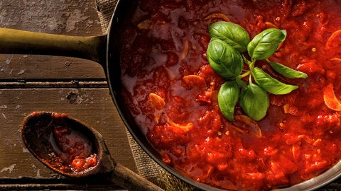

Marinara Sauce

Ingredients
- 128-ounce can whole San Marzano tomatoes, certified D.O.P. if possible
- ¼cup extra-virgin olive oil
- 7garlic cloves, peeled and slivered
- Small dried whole chile, or pinch crushed red pepper flakes
- 1teaspoon kosher salt
- 1large fresh basil sprig, or ¼ teaspoon dried oregano, more to taste
Steps
-
Pour tomatoes into a large bowl and crush with your hands.
Pour 1 cup water into can and slosh it around to
get tomato juices. Reserve.
-
In a large skillet (do not use a deep pot) over medium heat,
heat the oil. When it is hot, add garlic.
-
As soon as garlic is sizzling (do not let it brown), add the tomatoes,
then the reserved tomato water.
Add whole chile or red pepper flakes, oregano (if using) and salt. Stir.
-
Place basil sprig, including stem, on the surface (like a flower).
Let it wilt, then submerge in sauce.
Simmer sauce until thickened and oil on surface is a deep orange,
about 15 minutes. (If using oregano,
taste sauce after 10 minutes of simmering,
adding more salt and oregano as needed.)
Discard basil and chile (if using).